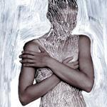
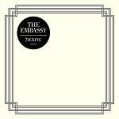
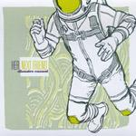

Music Reviews
-

House of Cosy Cushions Animal Dream
"So, you want to join my band?"
"Yeah, definitely."
"Well, what do you play?"
"Trombone."
(After a long silence) "OK, you're in."
Ryan Faughnder reviews... -

Six Organs of Admittance Luminous Night
Six Organs of Admittance returns after a whopping year off with possibly his finest album yet.
Ryan Pratt attempts to coin "goth-folk"... -

The Embassy Tacking
The Embassy's Futile Crimes helped to launch the Gothenburg Balearic pop scene. 2006's Tacking, which was almost as good, is now finally available in the UK.
David Coleman digs in... -

God Help the Girl God Help the Girl
Belle and Sebastian's Stuart Murdoch shares vocal duties with a variety of singers from Neil Hannon to competition winners on the soundtrack to his self-penned musical, God Help the Girl.
Joe Rivers reviews... -

The Soundcarriers Harmonium
If you remember the summer of 2009, you weren't there.
Ryan Pratt gets tie-dyed... -

Her Next Friend Disaster Casual
Her Next Friend have a new album, and I'm sorry to say they might better off covering other artists' hits.
Andy Pareti reviews... -

Caroline Weeks Songs for Edna
Caroline Week's sings the poetry of Edna St. Vincent Millay on her debut album
Andrew Baer no longer cares for Pulitzer winning poetry... -
YACHT See Mystery Lights
"This song is AWESOME! Who is this?" my top 40-loving friend Heather asked in the car. And the answer was YACHT.
Jaclyn Elgeness reviews... -

Icarus Himself Coffins
Wisconsin musician Nick Whetro's second notable project is often softer, more interesting, and simply better than its big brother, making for a better listen that doesn't require the contagious energy of his live performances.
Local listener Michael Merline reviews... -
The Most Serene Republic ...And the Ever Expanding Universe
Canadian septet take it one step forward with their third effort, a welcoming merge of classically trained instrumentation mixed with run-of-the-mill indie pop compositions.
Juan Edgardo Rodríguez is a bit bewildered but nonetheless impressed...